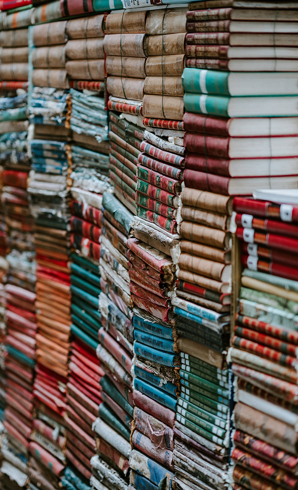
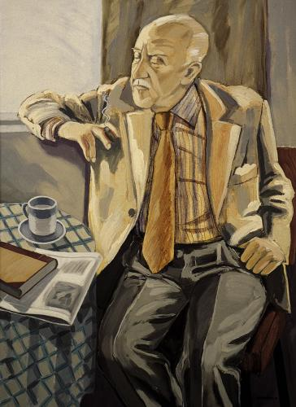
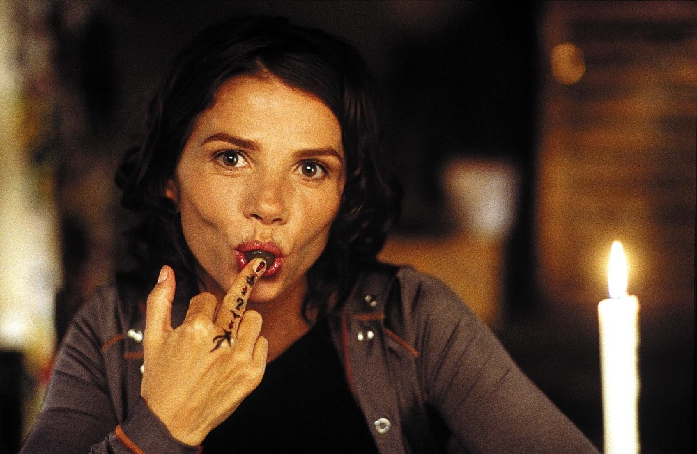
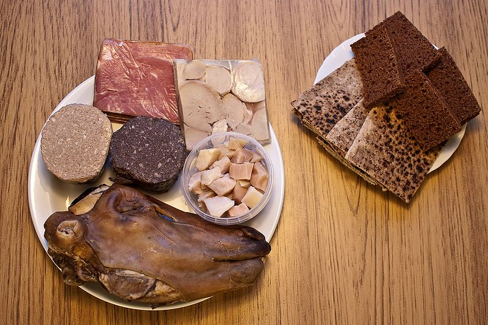

-

Literature
Iceland's best-known classical works of literature are the Icelanders' sagas, prose epics set in Iceland's age of...
-

Art
Contemporary Icelandic painting is typically traced to the work of Þórarinn Þorláksson, who, following formal training in ...
-
Music
Much Icelandic music is related to Nordic music, and includes folk and pop traditions. Notable Icelandic music acts include...
-

Media
Iceland's largest television stations are the state-run Sjónvarpið and the privately owned Stöð 2 and SkjárEinn. Smaller stations exist, many of them...
-

Cuisine
Much of Iceland's cuisine is based on fish, lamb, and dairy products, with little to no use of herbs or spices. Due to the island's climate...
-
Sport
Popular sports include football, track and field, handball and basketball. Handball is often referred to...